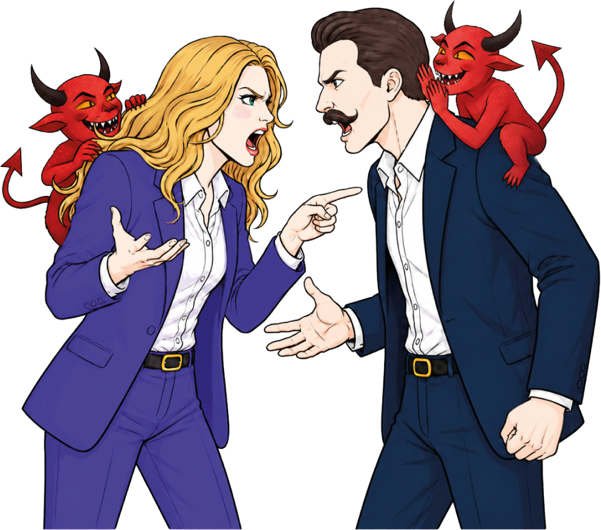
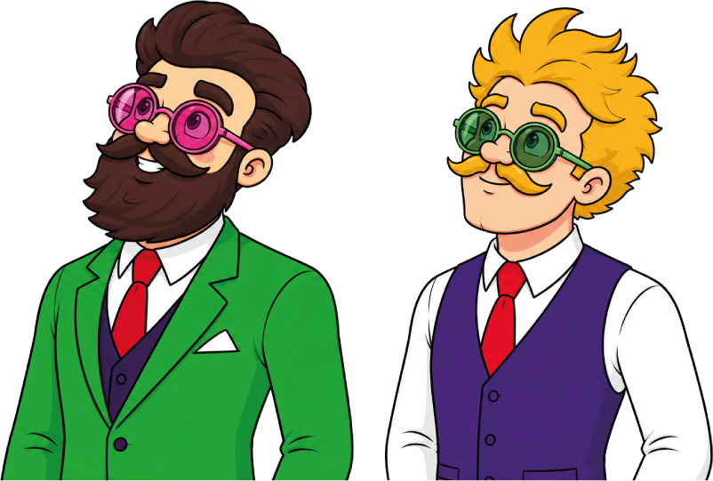
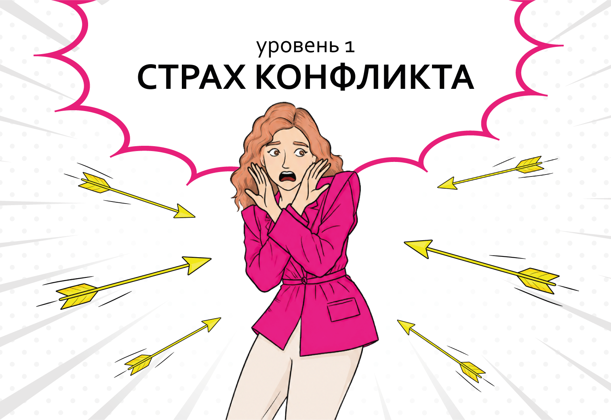
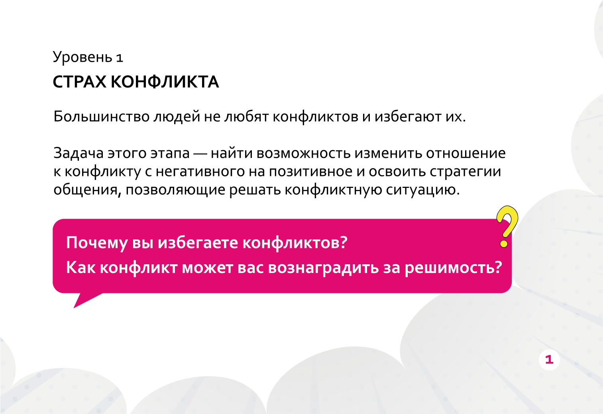
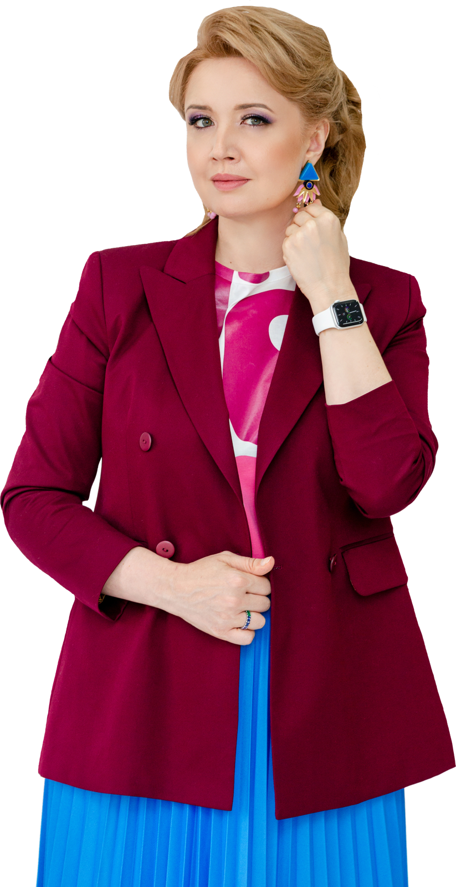
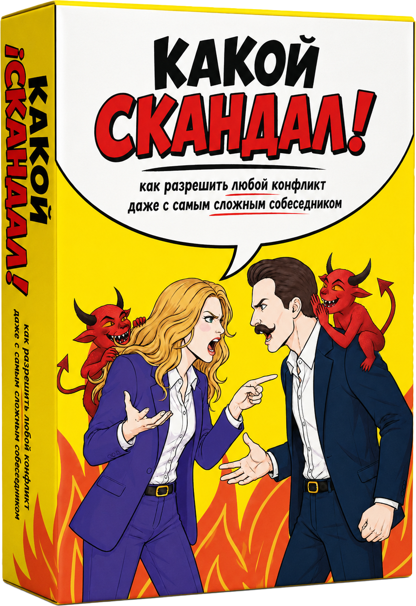

КАРТА ПРОГРЕВА
на игру/тренинг с использованием экспертных карт
КАКОЙ СКАНДАЛ!

F5GAME.RU
ПРОГРЕВ — это последовательное создание у аудитории жгучего интереса к вам и вашему продукту, которое заканчивается продажами, приносящими людям счастье.
Прогрев реализуется в соцсетях и задействует все виды коммуникаций с потенциальными клиентами: посты, видеоролики, прямые эфиры.
перед большим запуском продукта.
Например, собрать группу 12 человек на игру.
Продолжительность прогрева может быть от 1 дня до 2-3 месяцев перед большим запуском продукта.
Продолжительность зависит от того, насколько аудитория уже знакома с вами и вашим продуктом и от его стоимости. Для подготовки к дорогому запуску требуется больше времени.
Пример: вы хотите собрать группу на игру за 2 недели.
Чтобы вы могли составлять контент-план прогрева, как пазл, расшифруем, какими могут быть все составляющие контент-плана.
История, с которой все начинается
Вброс идеи
Обсуждение, создание ажиотажа
Рассказ о продукте
Кейсы и истории, демонстрирующие продукт
Объявление даты и создание предвкушения
Открытие регистраций в назначенную дату
Демонстрация интереса аудитории
Обсуждение страхов и сдерживающих факторов аудитории
Завершение продаж
Демонстрация результатов
Главная идея дня — это та мысль, с который вы бы хотели оставить свою аудиторию после изучения вашего контента.
Например: «Интересно, а у меня получится создавать управляемые конфликты?»
На чем может строиться сюжетная линия, которая подводит аудиторию к целевому действию:
Любая история интересна аудитории, только если в ней есть что-то удивительное, цепляющее, интригующее, создающее WOW-эффект и впечатления.
Ответьте себе на вопрос:

Выберите одну из карт «Какой скандал!» — это может быть техника, кейс или карта-схема. Не нужно ее раскрывать аудитории, подумайте сами, чем вас зацепила сейчас именно эта карта, на какую идею она вас натолкнула, какие мысли у вас появились – и напишите об этой идее пост. Саму карту не раскрывайте.
Таким образом вы можете проанализировать, на какие темы и идеи ваша аудитория откликается больше всего.
Например, вы прочли карту:


Призыв на игру вы можете добавить в конец первого поста или опубликовать в следующем посте (но публикуйте его не позднее следующего дня, а еще лучше — в этот же день, через несколько часов).
Если подписчики в ответ на ваш пост расскажут свои крутые истории, делитесь ими у вас на канале и связывайте с приглашением на игру.
Подобным образом используйте и другие карты игры для написания постов для прогрева.
Внутренние стороны карты публиковать в соцсетях не нужно, используйте для оформления профессиональные фотографии игры, ссылки на них размещены в канале для ведущих.

